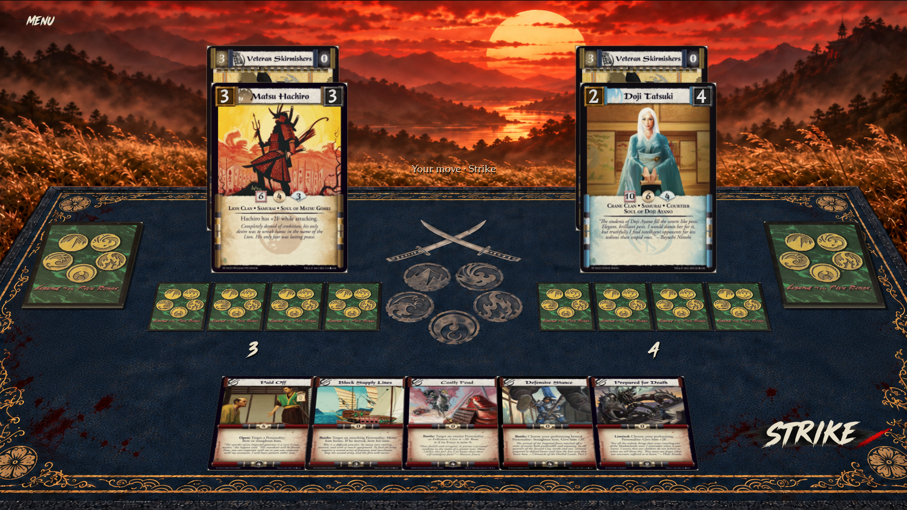
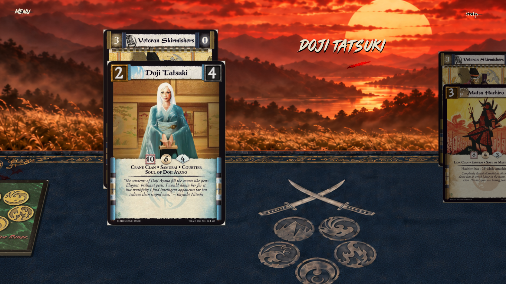
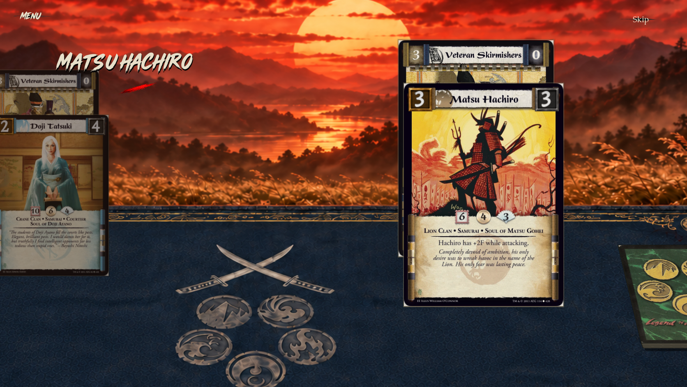
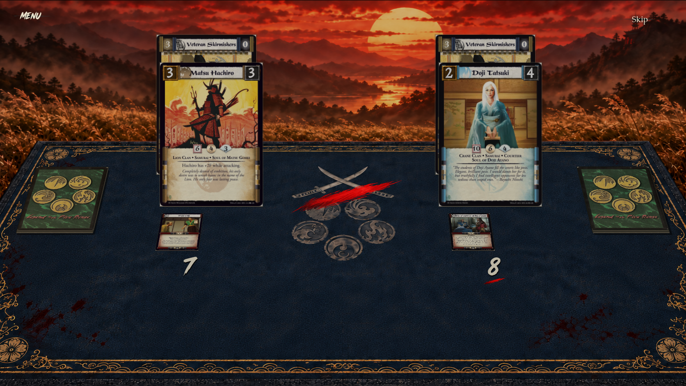
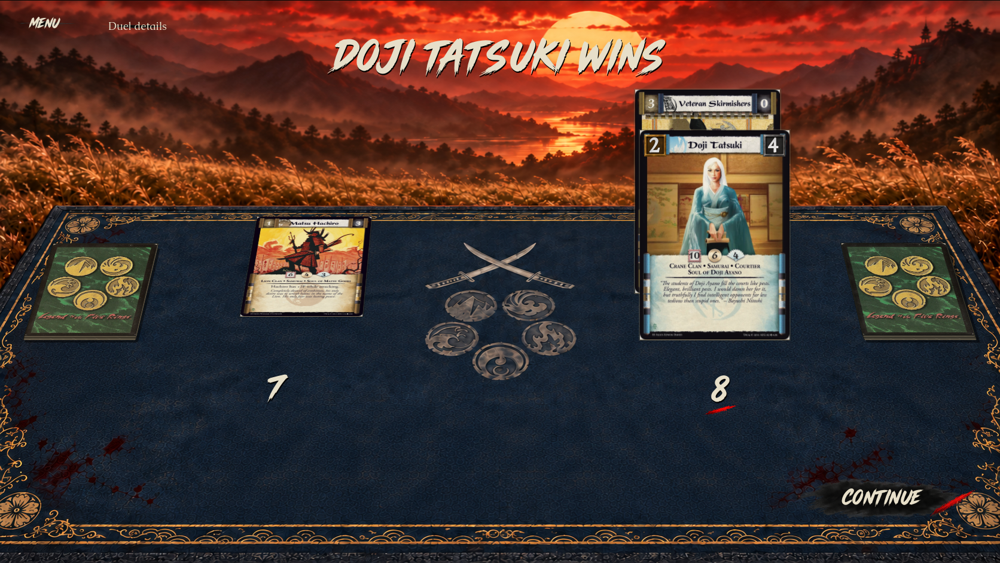
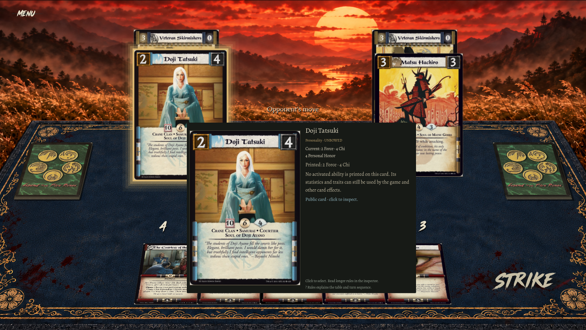
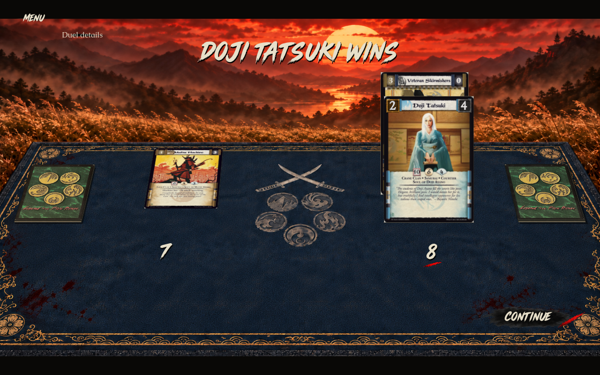
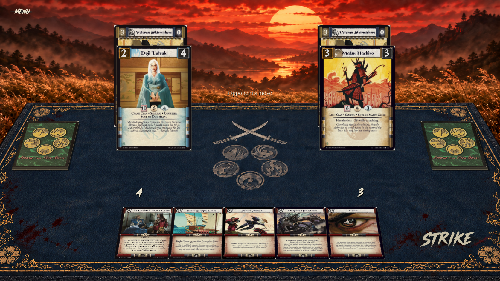
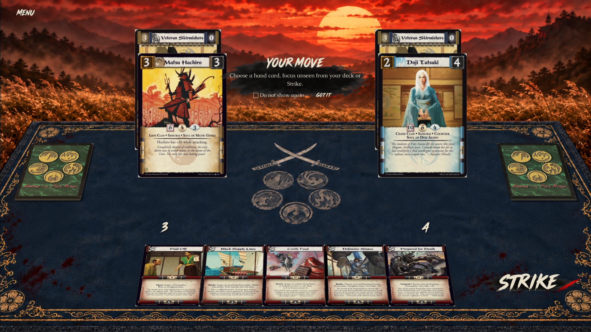

The approved source and real native renderer at the same display scale. Original printed cards, actual attachments and permitted engine state stay live. Extra corner cards and the recap strip are removed; actual public piles are available through Menu.









Native input probes, repeated-snapshot/privacy checks and evidence limits: validation.json. Timing: 3.4-second opening; legal reveal frames followed by a 1.8-second cut/aftermath. Local MP4s record the opening and the cut/verdict, with held native stills appended; the earlier legal reveal flips precede the cut clip. Clips contain no captured audio. Skip and reduced motion do not issue commands. Animated matte quality remains a separate visual acceptance track.